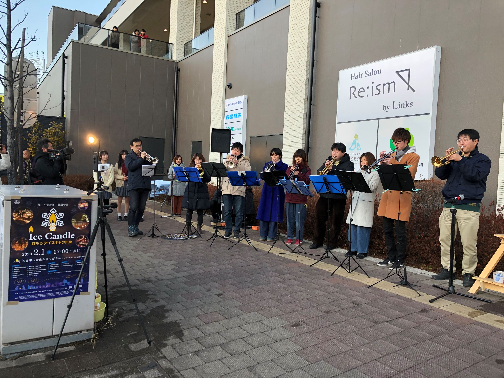

コンサート報告（2020年）
2025年 ｜
2024年 ｜
2023年 ｜
2022年
2021年 ｜
2020年 ｜
2019年 ｜
2018年 ｜
2017年
2016年 ｜
2015年 ｜
2014年 ｜
2013年 ｜
2012年
2011年 ｜
2010年 ｜
2009年 ｜
2008年 ｜
2007年
2006年 ｜
2005年 ｜
2004年 ｜
2003年 ｜
2002年
アイスキャンドル点灯式出演 演奏終了（2020.2.1）
 今年で26回目を迎えるアイスキャンドルの上諏訪地区点灯式に、当団トランペットパートが出演し、点灯時のファンファーレその他、数曲を演奏いたしました。
記録的な暖冬の今年ではありますが、当日は気温も下がり、アイスキャンドルらしい気候となりました。また、数年かけて行われていた上諏訪駅前の再開発がほぼ終了し、今回は6年ぶりに上諏訪駅の正面に戻ってきて演奏することができました。場を盛り上げることができたなら幸いです。ありがとうございました。
並木DEコンサート 演奏終了（2020.10.3）
例年5月の年度初めに演奏させていただいていますが、本年は春の演奏が中止となり、年度最終回に出演させていただきました。
感染症予防の観点から、開演時間や演奏スタイルも例年とは大幅に変更したため、お客様においていただけるのか内心心配しておりましたが、予想以上に多くのお客様にご来場いただきました。お客様、またご尽力いただきました実行委員会の皆様に深く御礼申し上げます。
7月以降、手探りでの活動をして参りましたが、何とかここまで漕ぎつけることができました。今後も無理のない範囲で活動を拡大していきたいと考えております。引き続きよろしくお願い申し上げます。
第26回上社の杜音楽祭 演奏終了（2020.10.25）
諏訪大社上社本宮すぐ近くの諏訪市博物館での音楽祭、今年は秋の澄みきった青空に恵まれました。感染症予防のため、恒例の合同演奏は残念ながら中止としましたが、諏訪市内４中学校吹奏楽部と当団の計５団体が出演、それぞれの演奏を披露しました。
今年は各校の吹奏楽部も制限された状況下の活動だったと聞いております。貴重な発表の機会ということで、保護者の方をはじめ多くのお客様にご来場いただき、私たちも気持ちよく演奏することができました。
場所をお貸しいただいた諏訪市博物館のスタッフの皆様や、多大なご協力をいただいた地元中洲地区の皆さんに深く感謝申し上げます。ありがとうございました。
第26回定期演奏会 演奏終了（2020.12.6）
毎年12月に開催している当団最大の行事・定期演奏会ですが、このような環境下でどのように開催するか、団員一同真剣かつ慎重に検討して参りました。その結果、本年は来場者を団員の家族などに制限した上で、12月6日に下諏訪総合文化センターで開催いたしました。
このため、今回は演奏会のご案内をすることができませんでした。楽しみにされていた皆様には誠に心苦しく、心よりお詫び申し上げます。
演奏者も通常の7割程度、お客様も約120人と、例年より小さな演奏会にはなりましたが、多くの皆様のおかげで成功裡に開催することができました。ご来場の皆様からいただいた温かい拍手、本当にありがとうございました。
また、開催にあたりましては多くの皆様のご協力を賜りました。改めて深く御礼申し上げます。
心おきなく音楽を楽しめる状況にはまだなっておりませんが、そんな日が一日も早く来ることを祈っております。
（演奏会の動画公開は終了させていただきました。多くの皆さまにご覧いただき、ありがとうございました）